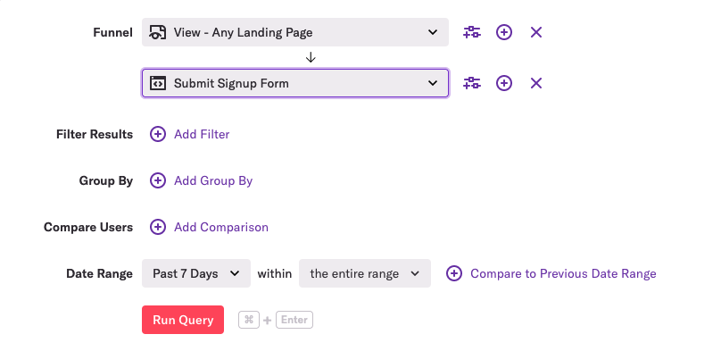

Note: This post was originally published on heap’s blog
Heap is a product analytics tool that automatically captures web and mobile behavior like page views, clicks, and taps. We’re operating at a scale of billions of events per day, which we store across a distributed Postgres cluster.
Heap’s thousands of customers can build queries in the Heap UI to answer almost any question about how users are using their product. Optimizing all of these queries across all our customers presents special challenges you wouldn’t typically encounter if you were optimizing the performance of a small set of queries within a typical app.
This post is about why this scale requires us to conduct performance experiments to optimize our SQL, and it details how we conduct those experiments.
Why it’s hard to optimize Heap queries
We want the querying experience within Heap to feel interactive, so we need most queries to return in just a few seconds. There are multiple reasons why this is particularly difficult to do with Heap queries, but the most important one is that Heap’s query builder allows customers to issue a wide variety of queries:

As you can see, we support filters, group bys, and comparing different groups of users and time periods. While using these features may only result in a small change to the SQL, it can have a big impact on performance.
Here’s a recent example of this.
One of our customers created a query that typically hits one of the millions of indexes we have across our cluster. More specifically, the query resulted in an index-only scan, a special kind of (speedy!) operation in which the database can satisfy a query with just the information that’s in the index, without having to read the table’s actual rows.
Then the user made a slight modification to their query by changing a simple value in a dropdown:
This change resulted in SQL that could not use an index-only scan, which made the query take much longer to execute.
Because of the wide variety of questions customers want to ask about their data, we have many examples like this. This means that when we’re assessing the performance of a set of queries that support a new feature within Heap, we can’t simply tweak some SQL, look at a few query plans from EXPLAIN ANALYZE, and call it a day. There may be a small, but common tweak to the query we’ve optimized that could tank the overall performance of the query. (This has happened to us multiple times.)
Here’s a histogram of some of our queries that helps show the variability of performance:

Experiments to optimize SQL
One of the things we do to combat this variability issue is to construct 95% confidence intervals around our estimates of performance. These confidence intervals help us identify the range of plausible values our p90 may take once we launch a new Heap query for all of our customers. This range takes into account the variability we introduce into our query performance by supporting a wide variety of ways customers can tweak and/or slice and dice their data.
We typically visualize new Heap query performance like this:
The width of the confidence bounds helps us see how much query performance could vary across all our customers and across all the various tweaks they make to their queries.
To test if a SQL change makes a query faster, we first generate experimental and control SQL for a few hundred Heap queries, which are stored as JSON. Then, for each JSON query, we generate the control SQL and the experimental SQL that we hope will improve performance.
Next, we run the queries in counterbalanced order, alternating which SQL statement gets run first for a particular JSON query. For example, given JSON queries A and B, we’d run our queries in the following order:
- Control SQL for Query A
- Experimental SQL for Query A
- Experimental SQL for Query B
- Control SQL for Query B
We do this control for the effect of caching. If experimental SQL is always run after the control SQL for all queries, the experimental SQL may look faster merely because those queries benefit from caching.
Why run experimental and control SQL on the same queries instead of a true experiment where we randomly assign queries to experimental and control groups? Because of the variability of query performance, a randomized experiment would require us to have a large sample of queries, which slows down the speed with which we can conduct experiments and puts additional load on our systems.
Once we’ve executed these queries, we plot the performance estimates with confidence intervals of the experimental and control queries.
The plot looks like this:
If the confidence intervals of the queries don’t overlap (as in the above picture), we can have some confidence that we’ve actually improved performance with our tweak.
Here’s a recap of the above process as a sequence diagram:
If you like nerding out about Postgres performance, @-me on Twitter @philosohacker, and if you like working on large data systems, we’re hiring! Check out our team and open roles.
I’d like to thank John Krauss for his help with reviewing early drafts of this post.